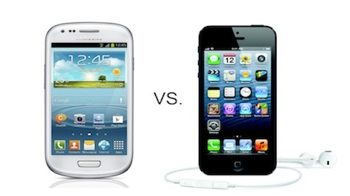

Galaxy s3
Carrier-
AT&T WirelessSpint
T-Mobile
Verizon Wireless
U.S. Cellular
Cricket
Networks-
3G (HSPDA/CDMA)4G (LTE/HSPA+)
Edge/2G (GSM/GPRS)
Operationg System-Android
Price (with contract)-$99
Price (without contract)-$549
Features-
DLNAFM Receiver
FM Transmitter
GPS Navigation
Graphics Accelerator
HD Playback
Microphone
Keypad Options- Touch Screen Keypad
Sensors-
AccelerometerBarometer
Digital Compass
GPS
Gyroscope
Screen Size- 4.8 inch
Display Technology- Super AMOLED
Screen Resolution- 1,280x720 pixels
Display Features-
Additional Display SupportAmbient Light Sensor
Multi Touch
Proximity Sensor
Scratch Resistant Glass
Pixel Density- 306 PPI
Camera Options-
AutofocusBurst Mode
Digital Zoom
Front Facing Camera
Image Stabilization
LED Flash
Panorama
Rear Facing Camera
Video Recording
Front Camera Quality- 1.9 megapixel
Rear Camera Quality- 8 megapixel
Maximum Video Capture Resolution- 1080p
Battery Life-
Talk Time- 22 hoursMaximum Standby Time- 830 hours
Battery Capacity- 2,100 mAh
Battery Technology- Li Ion
Wireless Connectivity-
3G4G
Bluetooth
Mobile Hotspot Tethering
NFC
WiFi
Carging Connection- microUSB
Headphone Connection- 3.5mm
Operation System- Android
CPU- Exynos 4212 Cortex-A9CPU Speed- 1.40 GHz
Processor Cores- Quad Core
RAM- 1,024 MB
Dimensions- 5.38"x2.7"x0.34"
Weight- 133 grams
Iphone 5
Carrier-
AT&T WirelessSpint
Verizon Wireless
Networks-
3G (HSPDA/CDMA)4G (LTE/HSPA+)
Edge/2G (GSM/GPRS)
Operationg System-iOS
Price (with contract)-$199
Price (without contract)-$649
Features-
DLNAGPS Navigation
Graphics Accelerator
HD Playback
Microphone
Keypad Options- Touch Screen Keypad
Sensors-
AccelerometerDigital Compass
GPS
Gyroscope
Screen Size- 4 inch
Display Technology- Retina LCD
Screen Resolution- 1,136x640 pixels
Display Features-
Additional Display SupportAmbient Light Sensor
Multi Touch
Proximity Sensor
Scratch Resistant Glass
Pixel Density- 326 PPI
Camera Options-
AutofocusDigital Zoom
Front Facing Camera
Image Stabilization
LED Flash
Panorama
Rear Facing Camera
Video Recording
Front Camera Quality- 1.2 megapixel
Rear Camera Quality- 8 megapixel
Maximum Video Capture Resolution- 1080p
Battery Life-
Talk Time- 8 hoursMaximum Standby Time- 225 hours
Battery Capacity- 1,440 mAh
Battery Technology- Li Ion
Wireless Connectivity-
3G4G
Bluetooth
Mobile Hotspot Tethering
WiFi
Carging Connection- Apple Lightning
Headphone Connection- 3.5mm
Operation System- iOS
CPU- Apple A6CPU Speed- 1.20 GHz
Processor Cores- Dual Core
RAM- 1,024 MB
Dimensions- 4.87"x2.31"x0.30"
Weight- 112 grams
Iphone 5 Review
Design | Performance | Camera | iSO | VideoDesign

A lot has been said about this design already and yet, there are still a few surprises we noticed when we first unpacked the box. It is noticeably lighter than the 4S, which you can feel as soon as you pick it up. It's slimmer too, though, this change is hard to spot. And of course, it's longer; as though someone at Apple took last year's phone and ran a rolling pin over it in the Apple staff kitchenette.
iPhone 5 is longer, but not wider.
It's longer, but not wider. This decision was made, apparently, so that the iPhone could be used in a single hand. Apple succeeds at this, but misses an opportunity to add screen real estate to core elements of the phone. In particular, the onscreen keyboard in portrait mode is the same size as before, and for some, this is too small to be used comfortably. It is interesting that Apple has maintained this distinction between its phone and the other top-tier Android models, offering a real alternative to users who don't want a large screened device.
The new aluminium and glass chassis is striking ? definitely one of the better refinements of Apple's design. And, for the first time in several years, the black version of the iPhone looks better than the white, with a sleek metallic blue hue when the light strikes it at certain angles.
(Credit: CBS Interactive) It's not a more comfortable design than the 4S, unfortunately, so that while it certainly looks nicer, it is still cold in the hand, with sharpish corners that sit at angles against your skin. Not that these edges are like knives in your hand, but most of the other top-tier releases this year have had a great, curved ergonomic design that the iPhone lacks.
If you've owned an iPhone in the past, you'll notice that the headphone socket has moved to the bottom of the phone, next to the new Lightning port. Though we have problems with the ramifications that changing the USB port will have for users, especially for people with older accessories, we do agree that the new Lightning connector feels more secure than the old 30-pin jacks, and we love that there is no right way to insert them.
Performance
Apple's new A6 processor delivers a user experience as seamless as every processor in every iPhone before it. We've come to expect silky smooth performance when using an iPhone, and this is no exception. Comparatively, there is a performance boost over the iPhone 4S in tasks like launching applications, but the difference is barely worth measuring.
Battery life is solid on the iPhone 5, especially stand-by power. You can leave the iPhone sitting with the screen turned off for days without the battery draining to zero. We attempted a continuous video playback battery test using the same 720p video file we use on all new Android phones, and the iPhone 5 scored about seven and a half hours. This result isn't as direct a comparison as we'd have liked, due to the looping app we have access to not scaling the video to the full screen size of the new phone. This meant that the video played with large black pillar boxes, giving the iPhone the advantage of not having to power the extra pixels. But, it is a very respectable result, nonetheless.
The major hardware milestone to consider in this release is the welcome addition of 4G data speeds. In Australia, you have 4G options with both Telstra and Optus, and after trying the iPhone 5 on both, we definitely recommend considering a 4G network for the iPhone. In speed tests, we saw a peak download of 61Mbps on the Optus network, and an average of about 20Mbps on both, and while it's pointless saying one is better than the other at this early stage, it is a major advantage for Optus and Telstra until Vodafone launches a similar network next year.
Adding to this, the iPhone's Safari browser remains one of the faster smartphone browsers available, and paired with 4G speeds, the results are impressively quick.
Camera

On paper, Apple may seem to have made only small changes to the iPhone camera, but in practice, this feels like a brand new shooter. The camera is lightning fast, taking pics just as soon as you hit the button, and the results are often superb. Colours are vivid and well produced, and the level of detail captured is impressive.
The iPhone has a few new photography tricks up its sleeve, too. For starters, you can now take a photo while shooting a video, even at 1080p resolution, which is a handy feature that we think loads of people will find a use for. You can also shoot panorama pics, which is easy to do and the results tend to be pretty sharp.
iSO

When it boils down to it, Apple vs. Android wars aside, the real reason to choose an iPhone over an Android phone, or not, is iOS. Apple's operating platform is fantastic for many dozens of small reasons, but it is its uniformity that makes it feel so accomplished. After reviewing nearly four-dozen Android phones and tablets this year, it is impossible to deny how nice it is to use a system where every app, regardless of its origin, has the same visual elements and the same polish.
A wider iPhone may have made this keyboard easier to use. (Credit: CBS Interactive) All that said, there is plenty about iOS that we don't love, most of which boils down to the fact that when we don't like something, however small, we can't change it. We mentioned the keyboard earlier; speaking of it being too small. This is a great example of a part of the iOS experience that we would love to have the freedom to customise. The Swype app that you find on a number of new Android phones is fantastic, and it isn't a win for Google or Android necessarily, but for the freedom that users have to make choices about what they like and how they like to use these tools. If you don't like the homescreen the way Samsung designs it ? you can replace it. If you want extra functionality in the SMS app or you'd prefer your web browser to offer specific functionality, you can find alternatives in the Google Play store. With iOS, you are too often hemmed into the Apple experience, which is not always the best.
Also, we still struggle with the fact that you can't access the iPhone's storage as a mounted drive over USB, and that file transfers mostly take place using iTunes as an intermediary. We now use our phones as mini computers, and really expect to have full and easy access to the data stored on them. In light of this, Apple's approach to file management is draconian.
Beyond the basics, there is the widely reported issues with Apple's new Maps app. Designed to replace Google Maps in iOS, the best way to describe Apple Maps is as a work in progress. Everyone we've spoken to about it has been able to bring up a new error that they or friends have spotted, and we can only guess that it will take a long time before all of these issues are ironed out.
But then, we can't remember the last time a mapping app was such a big deal. It's been a long time since we included Google Maps in our list of pros and cons when writing about Android phones. The same is true here. Yes, Apple Maps is far from perfect, but it is a small part of a broader user experience, and shouldn't be a reason to buy or not buy an iPhone 5, in our opinion. If you need a solid maps and navigation package, go with Android. Otherwise, read on.
Video
Galaxy S3 Review
Design | Interface | Camera | Battery Life | VideoDesign

The Samsung Galaxy S3 is, according to Samsung anyway, 'inspired by nature ? it sees, listens, responds, and allows you to share the greatest moments'.
While this is all a little hyperbolic, the nature theme is certainly present when you handle the phone for the first time. Brushed polycarbonate ? you've got a choice of 'Marble White' and 'Pebble Blue' ? adorns the large device, which runs in with dimensions of 136.6 x 70.6 x 8.6mm, despite still having to pack in a 4.8-inch Super AMOLED HD screen.
We'll lay it out right now: the plastic feeling of the Galaxy S3 won't appeal to all. It feels very lightweight (despite tipping the scales at 133g) in the hand, and some people will read this as feeling a little cheap. However, it's exactly the same sensation as we found on the Galaxy S2, and given the silly numbers of sales that had, we think there's more than a market for a phone that you'll barely notice in your pocket most of the time.
But we'll be very clear on this - the Galaxy S3 is not a cheap-feeling phone. It's got a really solid Gorilla Glass 2 front, a well-packaged interior and a more robust battery cover. It's polycarbonate rather than bog-standard plastic, although we're not sure some people will like the more rounded nature of the design.
However, despite being made of similar material, there's no doubt that the One X feels more premium in the hand thanks to being a touch more weighty? there's something about something so large being so light that some will find disconcerting.
Amendment: the HTC One X is actually 3g lighter than the S3, but despite carrying both around at once, the S3 still felt lighter, which shows the way texture can affect the way a phone feels in the hand. There's no doubt in our minds that the Pebble Blue offering is the much more attractive option, as the Marble White looks similar to a low-end Galaxy Mini or similar ? the brushed effect is really necessary.
Compared to rest of the Galaxy line, the S3 has more in common with the original Galaxy S than the S2, with curved edges the theme in the design language. The home button has also been elongated, although the same menu and back buttons remain from the prequel.
Overall, the effect is much more like the Samsung Galaxy Nexus than anything else ? rounded edges, HD screen but with a more minimal bezel to really accentuate the larger screen in the hand. The button design around the phone has been well thought out in our opinion - for a phone this big it's very difficult to make all the keys accessible, so putting the lock button on the right-hand side rather than the top makes a large degree of sense. The addition of the lozenge-shaped home button, and its softkey 'Back' and 'Menu' buttons are great additions in our eyes, as it means contextual menus can be found easily without needing to mess around looking for the on-screen icon. The volume up and down button is parallel to the lock key on the left-hand side of the phone, and also within easy reach when holding the Galaxy S3 in the hand.
The microUSB slot is placed at the bottom of the phone - easy to find with a charger but it will be interesting to see how it's used when placed in docks and car cradles.
The battery cover is also made of the same polycarbonate material as the rest of the body. Yes, you read that right - the battery cover is removable!
This means that not only can switch the battery in and out - a key consideration for many people - there's also a clever surprise in the shape of a microSD slot next to the microSIM port. Expandable memory? This just gets better and better. This means that theoretically you'll be able to have a 128GB-capacity Samsung Galaxy S3 if you combine the top spec of internal memory (64GB) with the largest microSD card around at the moment (64GB)... making it a mouth-watering prospect for those that love their media.
Sure, there are stats that say only 10% of users regularly go over 16GB of storage, but there's always the lower end version of the Galaxy S3 for that... but with HD movie downloads becoming far more prevalent, plus the influx of HD apps, we're thinking more space is an excellent idea. But overall, in the hand, the Samsung Galaxy S3 feels superb. The design contours well against the palm, and while the screen size may be a little big for some (you'll need a bit of shuffling to reach the upper section of the screen) it's definitely useable in the hand. So in short: if you don't mind a slightly lighter-feeling polycarbonate shell and you like big HD screens in your pocket, this is a phone definitely worth checking out.
Interface

Samsung has unsurprisingly re-tooled the Touchwiz overlay for the Galaxy S3, and has really gone to town with the whole 'inspired by nature' business.
For instance, the lock screen now becomes more interactive than ever. You don't get a visual clue when you're unlocking (which may be a nod to the litigation brought forth by Apple on the subject) but touch the screen and you'll see a little water ripple under the finger. Added to that is a little water drop sound, and the whole effect is surprisingly pleasing. We can see it irritating a few people after a while though, so turning it off will probably be a decent option. Samsung has taken a leaf out of HTC's book as well with the new overlay to the Galaxy S3 by allowing users to open up specific applications from the lock screen. Simply swipe the application upwards and you'll be taken directly to it without having to navigate within the phone itself. We still prefer the HTC Sense method of dragging the icon into the styled ring, but it's a real time-saver when you want to open the camera to get a quick snap, for instance. The S3 wasn't the speediest to wake up from sleep mode - this was a problem we had with the Galaxy S2, so it's obvioulsy a facet of the way Samsung designs phones. This has been improved in the software update to be a lot snappier, but it's still not perfect... we could do with it being a bit faster when we press the button. It's clear with the S3 that Samsung has worked out that there's only so much it can do on the hardware side these days ? not to say that we're unimpressed with the spec list - and as such has tried to bring the unique flavor through the interface instead. While the U.K. version of the Samsung Galaxy SIII rocks a 1.4GHz quad core Exynos processor - which is among the fastest Samsung has launched - folks on this side of the pond get devices sporting a Snapdragon S4 processor. Aside from running benchmarks, we doubt that the average user will even notice the difference.
With the re-worked Touchwiz, there's a definite sense the whole process has been simplified, as the phone has got a much easier feel to it when swiping around. That's not to say there aren't loads of widgets to be played with, but there is less clutter on the larger screen. The widgets selection has also been given an overhaul with the new software update - meaning you've got the ability to choose from larger calendar widgets, All Share Cast and more - play around as the new options will vary, but be sure to check it out. The dock at the bottom of the display has been increased to now hold five favorite items, which is a real plus for those that want internet, mail, phone and messaging all within easy reach (as well as the app menu). Swiping around the display was easy as pie ? it's not exactly taxing on the processor, but given that the HTC One X is one of the most powerful phones out but can't manage to stop live wallpapers from freezing, we're always happy to see slick interaction. This idea will track your eyes when looking at the display, and dim it when you're not checking out your phone. We're giving it a proper test in a later section of the review, so keep an eye out for that later on.
Smart alert is also present, and will be a lot more useful than voice activation. Pick up the phone when you've got a missed call or text and it will vibrate gently in your hand in combination with the notification light to let you know you're a popular guy. In truth, the fact that the notification light is there is more useful when picking up the phone to see if anyone has got in contact, but it's a neat feature that adds to the overall effect of the 'human integration' of the phone. Samsung's quick control functions are thankfully still available in the drop down notifications menu, easily accessed from the top of any screen ? we're glad they're still there, as it makes doing things like turning the Wi-Fi on and off much easier. However, there is one annoying feature here ? while there are loads of options, such as Bluetooth, mobile data and GPS, the bar will always scroll across every time you open the notifications bar. Yes Samsung, we get it: you've got loads of options up there. Now stop moving it every time!
As with many new Android phones, Ice Cream Sandwich is embedded out of the box, meaning you've got a plethora of options when it comes to notification management. You can easily get rid of anything that you don't care about by simply swiping the alert left or right ? it's a really neat system that means you can leave the bits you really care about.
The trick is reproduced in the application management pane: when holding down the Home button at the bottom of the phone you're presented with a long list of all the applications you've recently opened ? another flick of the finger and they're shut down. Opening this up used to be a really, really slow process. It's still not as sprightly as the same option on iOS, but it's a lot faster with the software update. However, this is different to the task manager Samsung has installed in the Galaxy S3, where you can look at running applications and the amount of power (and therefore battery) they're sucking down at any one time, which is very handy for when you're wondering why your phone is overheating so much ? not that we noticed that very much during our review. There's also the option to clear the RAM as well ? while it's tempting to keep closing all the running programs you might find this has an adverse effect on your overall power management as key software needs to keep rebooting, so use it sparingly. In terms of management options, there are more than ever before ? the battery usage meter is joined by the data management tool that allows you to see which apps are sucking down the most bytes, and also (and quite neatly, using sliding bars) allows you to set warnings for when you're getting close to your data limit and when you've reached it.
You can even tell the phone to stop connecting to the internet over 3G if you're worried about your data charges after a certain period ? this is certainly going to satisfy those that don't ever know how much data they're using as it grants total control. The menu system is very easy to use as before ? sort your apps chronologically or alphabetically ? and if you're not a fan of the standard grid system you can chuck them all into one long list.
There's a tab for apps (which you can filter to just those you've downloaded) and also widgets too ? with the seven allowed home screens on the top to chuck them into. There are loads to choose from (with more to come as you download applications) which can get a bit chaotic when you're scrolling through. And if you want to uninstall apps, simply open up the options from the menu in the App drawer - much easier than messing about through the innards of the phone or heading through Play Store. We noticed one issue with the interface speed: namely when pushing the graphics chip hard (perhaps loads of internet tabs or a pretty game) the interface will have to redraw when pressing the home key. It's a really bad feature as it detracts from the quality of the phone - Samsung has improved this with the update, but not to the point where we don't notice this flaw. The other big feature for the S3 is the addition of motion control ? not necessarily a new idea, but one that's been pushed to a whole new level in the phone. This means that not only does turning over the phone or placing your hand over it mute a call, but also performs the same trick when playing music. It can even do it when turning the phone over in mid-air? which is quite impressive when you think the handset can tell the difference between the pocket and a desk.
Other features, such as tapping the top of the phone to move to the top of a list, are pretty cool, but ultimately pale in comparison to Apple's (likely patented) tapping at the top of the screen ? and the S3's effort is nowhere near universal, so you can find yourself tapping the phone to no avail on more than one occasion. There's another new feature with the software update: you can press the power key and change the sound settings. It feels a little redundant as the same thing can be done with a drag down of the notification bar, but it harkens back nicely to the Nokia days when this was the only way to change sound settings. But overall the good news is the large screen looks great, the slick operation under the finger is exactly what we wanted and the little touches like the rippling lock screen do actually feel quite natural.
Camera

The camera on the Samsung Galaxy S3 is one of the biggest surprises from the Korean firm, and shows quite a step-change in the way it approaches mobile design: it's stuck at 8MP with the sequel to the S2. We don't think this is much of a problem - the humble mobile phone doesn't need any more than 8MP to take good quality snaps but Samsung has always chased specs in the past, so this is an interesting move.
What do you get for that lower spec? Well a thinner device of course - today's camera modules are very much slimmer than their counterparts a year ago, and a 12MP sensor would have had to be thicker or take inferior quality shots. See the S3's new camera features in action as we demo Buddy Photo Share, Burst Mode, Face Zoom and more in this video:
It's not a next-generation sensor though - we're seeing very similar hardware as that used in the Galaxy S2 with improved (and much improved, at that) software optimisation on the phone rather than bringing stonking picture performance. One of the big claims for Android 4.0 is the speed with which snaps can be shot when out and about, and that zero shutter lag is very much in effect here with the Galaxy S3. While there's no dedicated shutter button, getting into the camera is a piece of cake thanks to the number of options you've got.
Making sure one of the icons on the lock screen is definitely going to help, but there's also a little trick we uncovered that allows you to boot the camera even more quickly: hold the screen and turn the S3 into landscape mode (when on the lock screen) and the camera opens up instantly - and it's even faster with the new update. Which Ice Cream Sandwich-ified quad-core handset shoots the best photos and video? Find out in our S3 vs HTC One X camera test comparison video:
We measured the time it takes to go from pocket to picture, and while it's a little slower than the HTC One X, it's barely a second slower - we reckon you'll be pleased with the results in under four seconds,
Samsung has thankfully dialled back the range of stupid settings you can mess around with on the Galaxy S3, which means a slicker experience when trawling through the settings - plus you can edit the icon placement to make it simpler to find the functions you use most often. It has, however, added in a new feature with the software update: a wand will allow you to apply effects before shooting. One of the most striking is the change to filter out colours, meaning you can get some great shots where only blue and green are on show, for instance.
One of the most novel features on the Galaxy S3 is the ability to recognise faces from within photographs - this is meant to make it simpler to find the people you care about. We're sad the results don't go into the contact's profile within your phone (which would make sense given you have to assign a contact to the tag to make it work) but if you've got them in a group you can see that simply from within the Gallery app. However - in practice the trick is a little bit hit and miss at times. We'd estimate around 80% of the photos we took got the face spot on (although sometimes questioned whether the tag was right rather than automatically setting it) but the other times it had no idea.
The issue seems to be if any part of the face is covered or in slight shade - we're not talking total obfuscation, so we were a little surprised. However, when it does work, it's mightily impressive, and you can email the photo to those involved (but sadly not upload to Facebook pre-tagged). There are a number of other features we like too: Burst mode works well, taking 20 photos in a row at around 10 per second, which is great if you trying to take a picture of your cat doing a back flip and want all of the sections. Best Shot can also be used with Burst mode (where the S3 works out the best pic for you from the selection) but you're limited to eight shots in this scenario. We're probably being a little bit picky, but the processing time after each Best Shot set was taken was too long in our opinion - we want to see evidence of that quad core monster in action. Plus it would be good if we didn't have to set the Burst mode up each time we wanted to use it - on the HTC, it's simply a case of holding down the shutter button. The front facing camera is closing in on being a decent sensor in its own right ? at 1.9MP it's capable of taking non-grainy self portraits and can even record in 720p video as well ? we're fans.
The other features, such as HDR mode, Beauty mode, Panorama and Smile shot all offer excellent picture quality if you're into that sort of thing - although we can't really see a use for Cartoon other than those that want a blurry mess to show to friends. Overall, the speed with which you can take a picture, the options on offer and the sheer range of settings for those that want to dig a little bit deeper (the contrast, exposure, ISO levels and white balance tweaks will appeal to many) all combine to make a cracking camera that will be more than adequate for most. Update: Why not see how the S3's camera compares to the iPhone 4S, HTC One X and Galaxy S2 in our video below?
We can't see the Galaxy S3 winning many cameraphone of the year awards thanks to last-gen hardware on board - but the pictures you take are available quickly, have a variety of ways to improve them and certainly look pretty decent.
Battery Life

Battery life. One of the most contentious element still on smartphones and one we're keen to see stop being an issue ? and it's thankfully nothing to worry about on the Samsung Galaxy S3. See how it fares in our tried and tested battery power video:
The 2100mAh battery is designed to make sure that the large screen, with millions of pixels, isn't going to suck down the power as fast as it might do.
That's not to say the screen isn't thirsty ? it takes up a good portion of the battery meter each time you check in ? but overall, battery life was not an issue we butted up against regularly. Let's put it into some context: subjecting the Galaxy S3 to the same test we do all smartphones, it's come out as the second longest-lasting device of all we've checked out. We ran a 90 minute video at full brightness and applied all accounts (Dropbox, Facebook, Twitter, Exchange etc) and set them all to the most regular updates over Wi-Fi.
The Samsung Galaxy S3 managed to get to only 82% battery power by the end of the test ? compare that to the 60% of the HTC One X and 74% of the iPhone 4S and you can see why we're impressed. Under heavy load, the phone will last about 8 hours. And we mean heavy: the battery test we mentioned plus an hour of photography and video. After than half an hour of playing Riptide GP and then some web browsing for a further hour. Then around twenty minutes of music listening before an hour's session on video. We also had the voice-control activated from the lock screen the whole time, which Samsung tells you is a real battery killer as it listens to what you say. This pushed the battery to about 20%, after which we killed it trying to synchronise over Wi-Fi direct in about 45 minutes (although this can be a real battery drainer). In real use, as in not checking it every seven seconds to play with it (the curse of the new phone) you'll get a much more reasonable battery life. We regularly saw power drops of only 30% by 2PM, and a healthy 25% by bedtime. This will change during use, obviously, but it's much harder to hammer the battery through actually doing things the phone is supposed to compared to the HTC One X. This has also been improved by the software update AGAIN. While some days saw the battery meter swing a little bit lower than usual on the odd day of hardcore usage - this was improved and since updating we haven't gone lower than 25% at bedtime. Excellent work, Samsung.